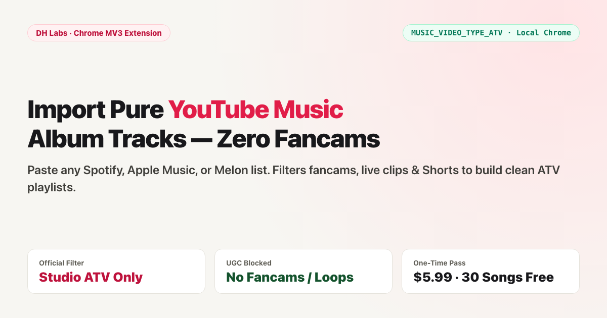
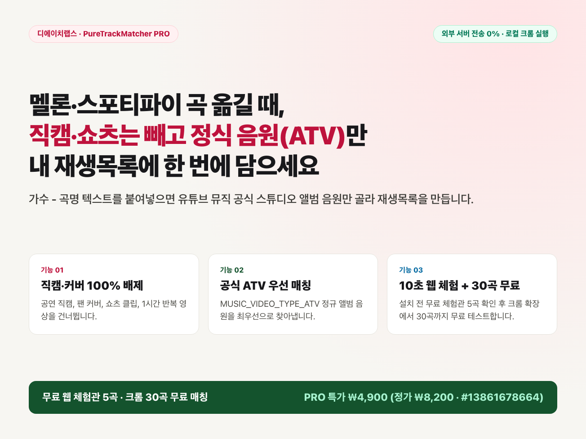
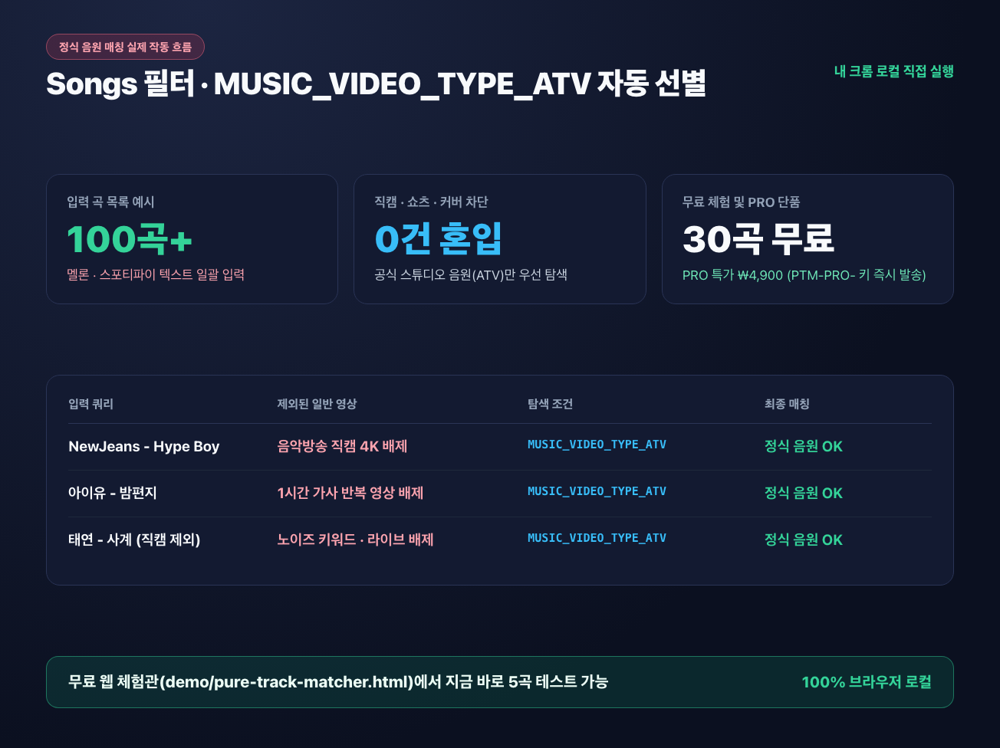
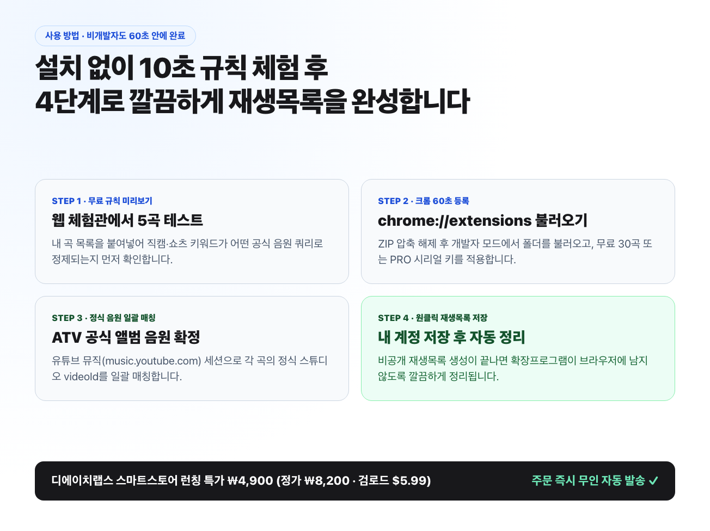

멜론·스포티파이 곡 옮길 때,
직캠·쇼츠는 빼고
정식 음원(ATV)만 담으세요.
'가수 - 곡명' 텍스트 목록을 붙여넣으면 WEB_REMIX Songs 필터와 MUSIC_VIDEO_TYPE_ATV 공식 앨범 음원 판별 로직으로 직캠·라이브·팬 커버를 배제하고 내 크롬 세션에서 바로 재생목록을 생성합니다.

PureTrackMatcher PRO란 무엇인가요?
PureTrackMatcher PRO는 디에이치랩스(DH Labs, PTM-PRO-V1)가 개발한 100% 브라우저 로컬 크롬 확장프로그램(MV3)입니다. 멜론·스포티파이·애플뮤직에서 가져온 가수 - 곡명 텍스트 목록을 사용자 크롬 세션의 SAPISIDHASH 인증으로 music.youtube.com/youtubei/v1/search(clientName: WEB_REMIX, Songs 전용 파라미터)에 질의한 뒤, 일반 영상이나 직캠·쇼츠·팬 커버 대신 공식 스튜디오 앨범 음원(MUSIC_VIDEO_TYPE_ATV)을 최우선 선택해 비공개 재생목록을 자동 생성합니다.
일반 플레이리스트 변환 웹툴과 PureTrackMatcher PRO는 무엇이 다른가요?
| 비교 항목 | 일반 텍스트 · 웹 변환기 | PureTrackMatcher PRO (로컬 크롬 MV3) |
|---|---|---|
| 직캠 · 라이브 영상 혼입 | 단순 첫 번째 검색 결과를 담아 직캠·가사 영상이 수시로 섞임 | WEB_REMIX Songs 필터 적용 후 MUSIC_VIDEO_TYPE_ATV 우선 확정 |
| 계정 비밀번호 · OAuth 안전 | 외부 웹 서버에 구글 OAuth 권한 위임 필요 | music.youtube.com 로컬 탭 세션(SAPISIDHASH)만 직접 사용 |
| 사전 규칙 테스트 | 결제 전 실제 필터 동작 확인이 어려움 | 무료 웹 체험관(5곡) + 크롬 확장 30곡 실제 매칭 무료 제공 |
| 시리얼 검증 및 작동 안정성 | 외부 API 서버 다운 시 작동 중단 | 브라우저 내 SHA-256 오프라인 시리얼 검증 + 24시간 내 패치/환불 지원 |
실제 작동 흐름과 4단계 생성 가이드는 어떻게 되나요?

1. 곡 목록 텍스트 붙여넣기 — 한 줄에 한 곡씩 '가수 - 곡명' 형태로 입력합니다.

2. 직캠·반복 영상 제외한 공식 ATV 확정 — 음악방송 직캠이나 커버 영상을 자동으로 건너뜁니다.

3. 1클릭 비공개 재생목록 저장 — 재생목록 제목 지정 후 내 계정에 바로 생성합니다.
33초 작동 요약 영상과 무료 웹 체험관 바로 쓰기
왜 설치 전 10초 웹 체험부터 먼저 열어보나요?
PureTrackMatcher 무료 웹 체험관에서 내 플레이리스트 5곡을 넣으면, 직캠·쇼츠·1시간 반복 같은 노이즈 키워드가 어떤 공식 음원 탐색 조건으로 정리되는지 설치 전 즉시 확인할 수 있습니다.
- 크롬 웹스토어 심사 대기 없이 다운로드한 ZIP을 풀어
chrome://extensions에서 60초 만에 실행합니다. - 무료 모드로 실제 30곡 매칭 및 재생목록 생성을 먼저 검증해 보세요.
- 100곡 이상의 대량 플레이리스트를 옮길 때만 주문 시 즉시 발송되는
PTM-PRO-시리얼을 입력하면 무제한 실행됩니다.
공식 판매 채널 및 가격표 (국내 런칭 특가 · 글로벌 1회 결제)
| 채널 / SKU | 구성 및 혜택 | 가격 | 바로가기 |
|---|---|---|---|
네이버 스마트스토어 (국내 공식)PTM-PRO-V1 |
PureTrackMatcher PRO 크롬 MV3 ZIP 파일 + 1분 설치 가이드 + PTM-PRO- 무인 시리얼 키 즉시 발송 |
₩4,900 (정가 ₩8,200 → ₩3,300 즉시할인) |
스마트스토어 구매 → |
Gumroad Global Storepuretrackmatcher |
Global English Chrome MV3 ZIP + offline SHA-256 PRO serial key (Card / Apple Pay / PayPal) | $5.99 USD (One-Time) |
Gumroad Global → |
자주 묻는 질문 (FAQ)
Q1. 어떤 음악 앱의 플레이리스트를 옮길 수 있나요?
멜론, 스포티파이, 애플뮤직, 벅스, 지니 등 곡 목록을 텍스트('가수 - 곡명' 한 줄 1곡 형식)로 추출할 수 있다면 모두 그대로 붙여넣어 매칭할 수 있습니다.
Q2. 진짜로 직캠이나 일반 유튜브 커버 영상이 빠지나요?
네. 유튜브 뮤직 WEB_REMIX 검색 API에 Songs 필터 파라미터(EgWKAQII...)를 실어 보낸 뒤, 응답 객체 내 musicVideoType === "MUSIC_VIDEO_TYPE_ATV"(공식 앨범 트랙)를 최우선 매칭해 일반 팬 영상 유입을 차단합니다.
Q3. 결제 후 바로 사용할 수 있고 환불 규정도 명확한가요?
네. 스마트스토어·검로드 결제 직후 자동 발송되는 ZIP 파일과 시리얼로 60초 안에 작동하며, 오류 발생 시 24시간 내 무상 패치 또는 30일 환불 정책에 따라 전액 환불해 드립니다.